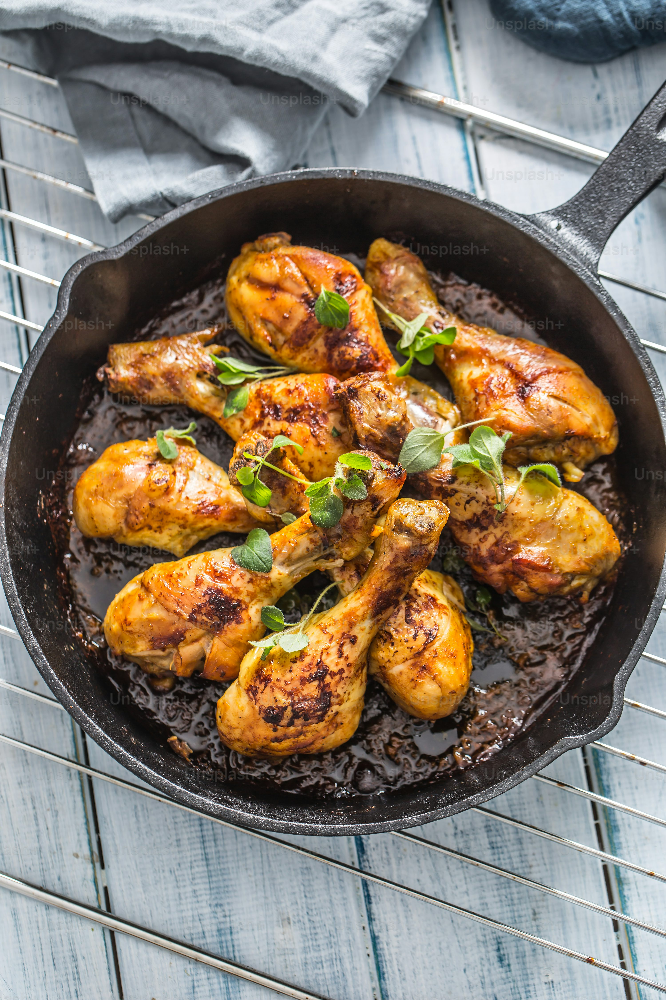

Roast Chicken

Description
Roast chicken is a timeless dish that combines tender, juicy meat with
crispy, golden-brown skin. It’s simple to prepare yet delivers incredible
flavor, making it a staple for family dinners and special occasions alike.
With just a few basic ingredients and a hot oven, you can create a comforting
and impressive centerpiece that pairs beautifully with almost any side dish.
Ingredients
- 1 whole chicken (about 4–5 pounds)
- 2 tablespoons olive oil or melted butter
- 4 cloves garlic, minced
- 1 lemon, halved
- 1 onion, quartered
- 2–3 sprigs fresh rosemary
- 2–3 sprigs fresh thyme
- Salt, to taste
- Freshly ground black pepper, to taste
- Optional: carrots, potatoes, or other vegetables for roasting
Steps
- Preheat your oven to 425°F (220°C).
- Pat the chicken dry with paper towels and place it in a roasting pan or oven-safe dish.
- Rub the chicken all over with olive oil or melted butter, then season generously with salt and pepper.
- Stuff the cavity with the lemon halves, onion, garlic, and fresh herbs.
- If desired, scatter carrots, potatoes, or other vegetables around the chicken for roasting.
- Tie the legs together with kitchen twine to help the chicken cook evenly.
- Roast the chicken for 1 hour to 1 hour 15 minutes, or until the juices run clear and a meat thermometer inserted into the thickest part of the thigh reads 165°F (74°C).
- Remove from the oven and let the chicken rest for 10–15 minutes before carving and serving.